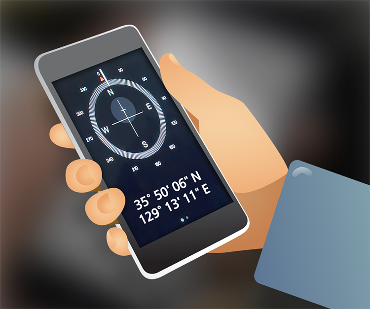

통화가 가능하면 119에 연락해 구조 요청을 하고, 가족과 지인에게도 자신의 위치와 상황을 문자로 알립니다.
신호가 잘 잡히지 않으면, 주기적으로 전화기를 껐다 켜면서 계속 연락을 시도합니다. 사고 지점 주변으로 응급 기지국을 추가 설치하므로 처음에는 연결되지 않더라도 나중에는 통화가 될 수 있습니다.
가능한 정확한 위치를 알려야 합니다. 붕괴된 건물에 갇혔거나 화재 발생시에는 주소 외에도 층수, 호수도 함께 알립니다.

주소를 모르거나 외진 곳, 해상에서는 먼저 자신의 좌표를 확인합니다. 통화는 안 되더라도 GPS로 작동하는 나침반이나 고도계 어플리케이션으로 현재 위치를 알 수 있습니다.
자동차의 네비게이션이나 스마트폰의 GPS 나침반은 다음과 같은 형태로 좌표를 표시합니다.
(1) 35.834683, 129.219063
(2) 35° 50' 06" 북, 129° 13' 11" 동
구조 요청 메시지를 보낼 때 이렇게 표시된 위치 정보를 함께 발신하세요.
차량, 선박, 항공기 사고시 통신 장비가 손상되어 마이크가 작동하지 않거나 수신이 안 되더라도 전파 송출이 가능하다면 스위치를 조작해 SOS 메시지를 발신합니다.
‘짧게 세 번, 길게 세 번, 짧게 세 번’ 신호는 국제 통용 SOS 모스코드입니다. 야간에는 조명기구를 이용해 빛으로도 구조 요청 메시지를 보낼 수 있습니다.